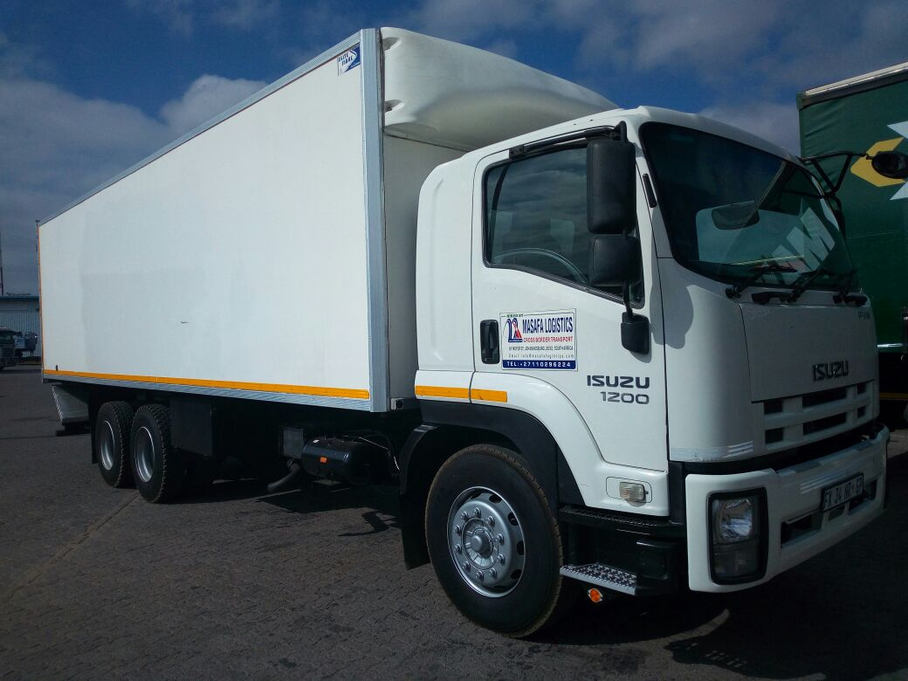

We are immersed in a process of continuous improvement and daily strive to provide transparent, valuable and reliable services to our customers, while enhancing the lives of all those who share our efforts and of the common people in South Africa.
OUR MISSION STATEMENT
Masafa Logistics success is directly related to the quality of the services we provide to our Customers. We are proud of our employees’ focus on the ever-changing needs of our Customers and their ability to provide them with a flexible, dependable service in a timely and reliable manner.
As a customer driven company, we are committed to meeting both the present and future transportation needs of various industries. We realize that while it is important to look to the future, it is imperative to ensure that current operations run smoothly. This commitment includes optimizing the use of all of our resources within our high safety standards.
We are dedicated to implementing the most modern technology in our industry. Our information system is fully computerized and integrated, including dispatch functions and satellite tracking.
To assist us in remaining competitive, all employees of Masafa Logistics are committed to maintaining our quality management system based on the set standard. We recognize the value of this system in improving our business practices.